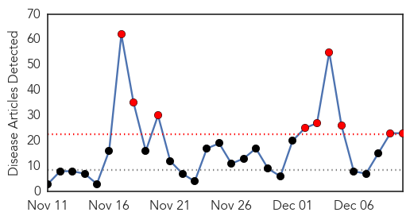
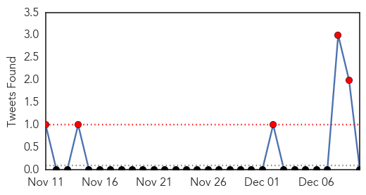
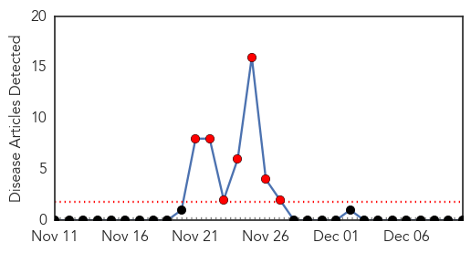

Influenza
30-Day Web Trend
9 alerts, 0 warnings

30-Day Twitter Trend
3 alerts, 0 warnings

Article Locations
Article Confidences

Top Articles:
- 0.999
- Different flu strains send more people to hospitals
- 0.999
- There’s still time for flu vaccines
- 0.997
- Get Healthy: This week is National Influenza Vaccination week
- 0.997
- County urges vaccinations during National Flu Immunization week
- 0.995
- Flu vaccine effectiveness often a gamble
- 0.985
- Flu Symptoms in Kids: Stay Home or Go to School?
- 0.956
- Seasonal influenza vaccines 2014–2015 provide protection against circulating flu viruses (WHO
- 0.933
- DIGITAL EXTRA: Tracking Cold and Flu Trends
- 0.931
- Avian flu outbreak now spread to 7 B.C. farms: CFIA
- 0.924
- Alabama health officer says dominant flu strain not included in vaccine
- 0.919
- Avian flu detected at two more farms in B.C. as outbreak continues to spread
- 0.915
- Avian flu detected at two more farms in B.C. as outbreak continues to spread
- 0.903
- Legal experts weigh in
- 0.876
- B.C. restricts poultry movements to contain virus
- 0.860
- Sickness taking toll on school attendance
- 0.788
- Owatonna High senior dies of flu-like illness
- 0.771
- Nearly half of Americans think flu shot can make you sick
- 0.757
- Birmingham councilor sponsors free flu shot clinics
- 0.739
- Avian flu, epidemic, British Columbia, poultry, imports
- 0.695
- Letter: Evidence-free government policies
- 0.641
- Following Athina K: Home Remedies for Viral Times
- 0.571
- SA bans poultry imports
- 0.506
- Canadian poultry imports suspended due to bird flu
Top Tweets:
- 0.512
- RT: Dec 7-13 is National Influenza Vaccination Week. Protect yourself & loved ones by getting a flu vaccine. http://t.co/IhbzPd88Ec…
Bubonic Plague
30-Day Web Trend
7 alerts, 0 warnings

30-Day Twitter Trend
1 alerts, 0 warnings

Article Locations

Article Confidences

Top Articles:
-
No articles found for Dec 10, 2014
Top Tweets:
-
No tweets found for Dec 10, 2014